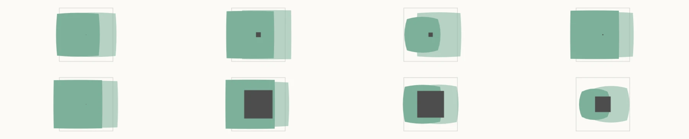
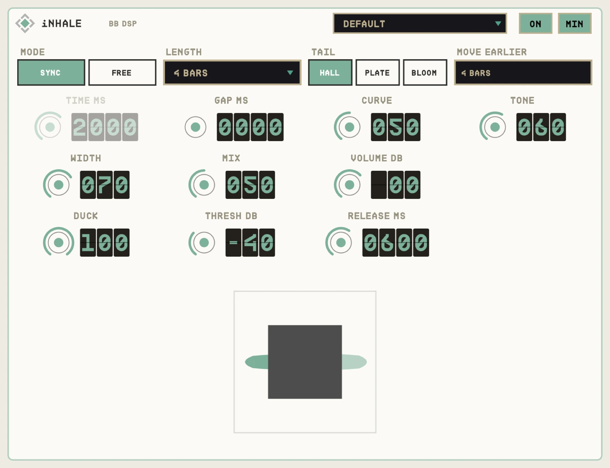

OVERVIEW
Classic reverse reverb means bouncing, flipping, reverbing and flipping again. iNHALE does it live. Every sound gets a reversed tail that swells up into it, so the reverb rises and finishes on the hit.
Because a swell has to start before the note, iNHALE delays its output by a whole number of bars. The MOVE EARLIER readout tells you how many; move your region that many bars earlier and it lines up perfectly.


QUICK START
- 01Insert iNHALE and set LENGTH for how long the swell is.
- 02Read MOVE EARLIER (in bars).
- 03Move the audio region that many bars earlier.
- 04Play from the top. The swell lands on each note.
HOW IT WORKS
Zero reported latency
iNHALE reports no latency and instead delays by whole bars, which keeps everything musical and simple to fix.
Change while stopped
The bar delay only changes while the transport is stopped.
Ducking
DUCK pushes the swell down under the plugin's own input, so the dry note stays clear.
CONTROLS
Values in the dark wells are the defaults.
MAIN
MODESYNC / FREE
SYNC
Swell length in note values or in ms (TIME).
LENGTHnote values
How long the swell is.
TAILHALL / PLATE / BLOOM
HALL
The character of the reverb.
GAPms
0
Silence between the swell's end and the note.
CURVE0-100%
50
Shape of the rise.
TONE0-100%
60
Brightness.
WIDTH0-100%
70
Stereo width; the shape splits in two.
MIX0-100%
50
Dry against swell.
VOLUME-24 to +12 dB
0
Output level.
DUCK
DUCK0-100%
0
How much the swell is pushed down.
THRESHOLD-60 to 0 dB
-30
Level that triggers the duck.
RELEASEms
300
How fast the swell recovers.
TIPS
- Set MIX to 100% on a send for a pure, pre-echo swell under the dry track.
- BLOOM tail with a short GAP is great on vocals before each phrase.
SPECS
- TYPE
- Audio effect (AU aufx), VST3, Standalone
- DELAY
- Whole bars, up to 32 s
- OUTPUT
- Stereo